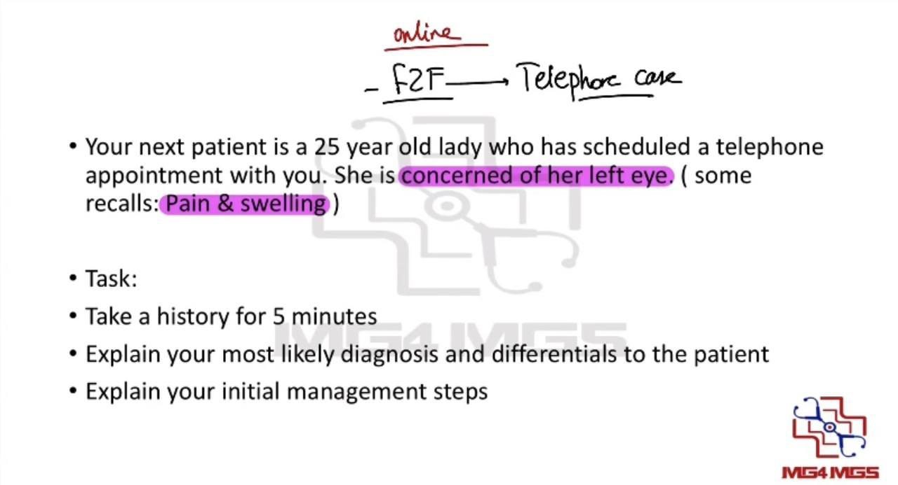
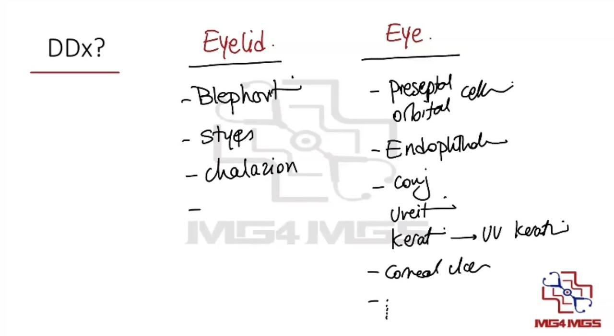
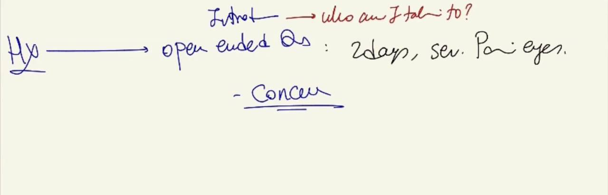
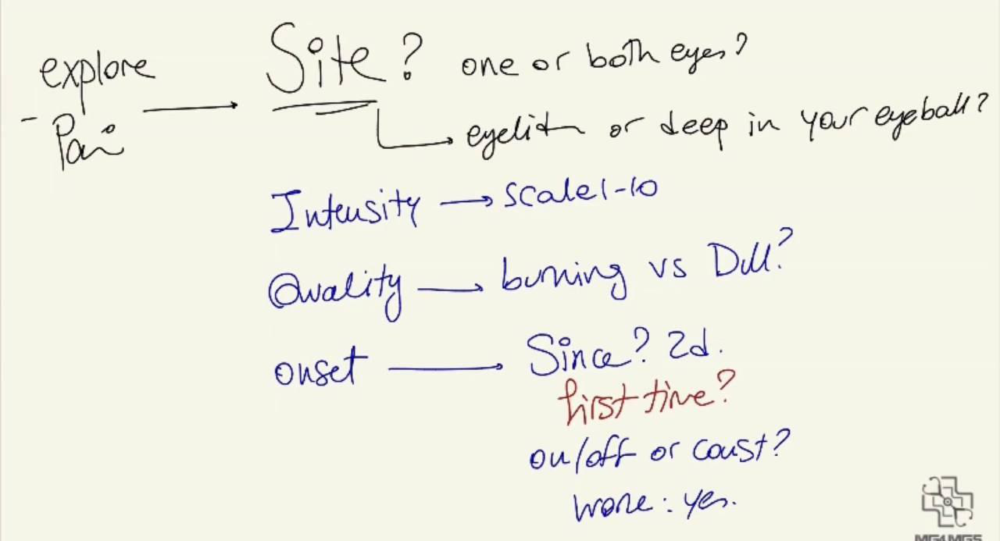
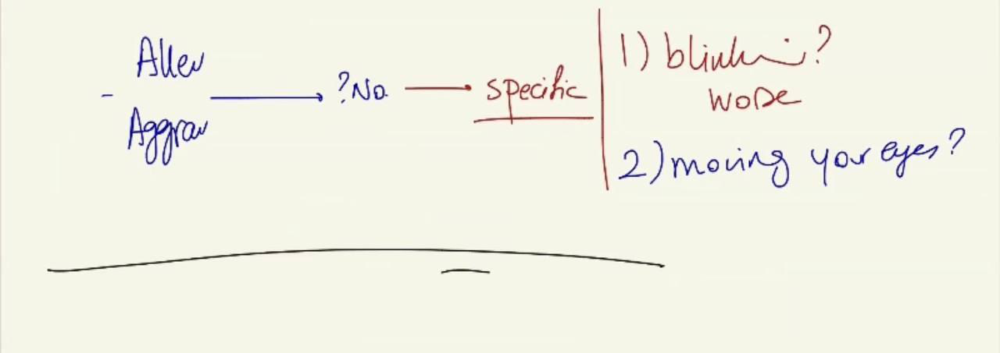
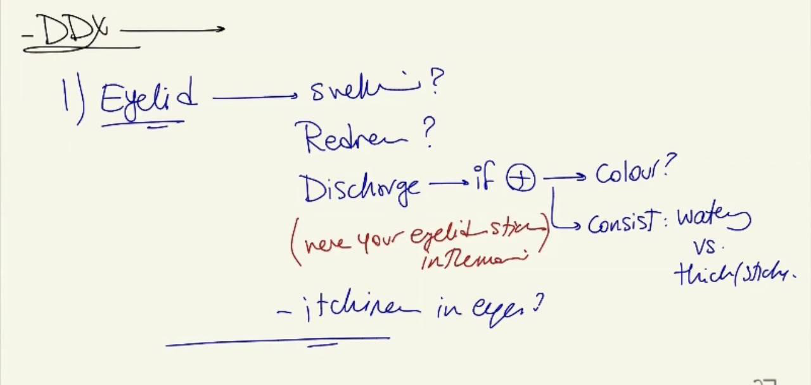
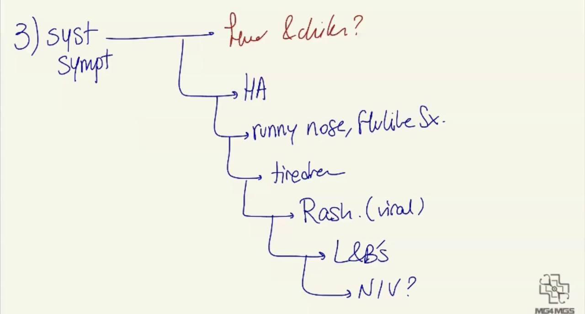
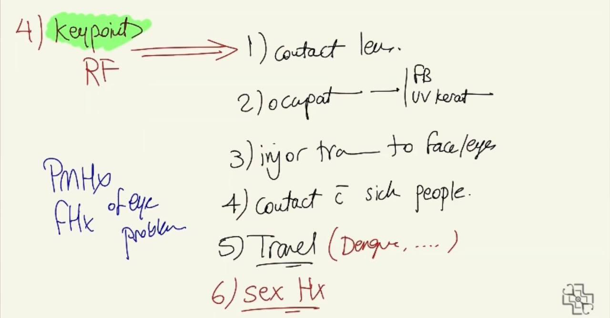
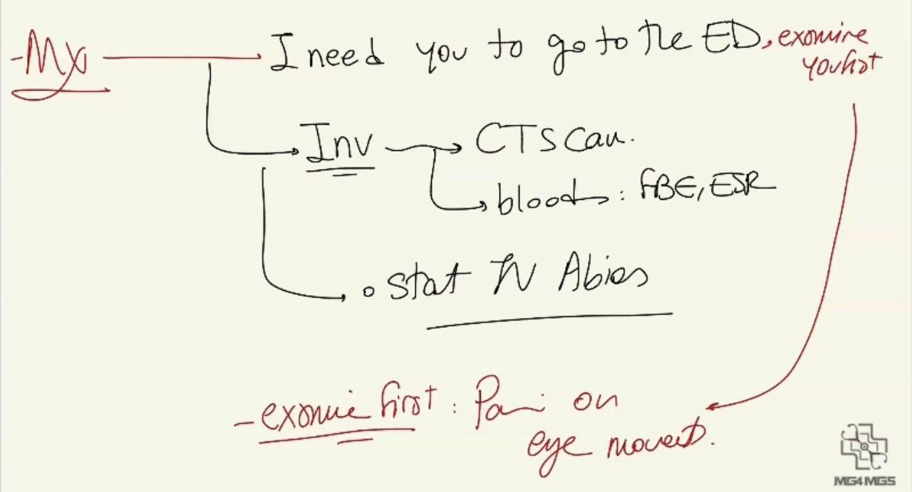

Source: Dr. Amir workshop — Med workshop 2 - 2026 / CLASS 3 OPHTHALMOLOGY (Aug 2026 drop) · Specialty: ophthalmology
Telephone consultation. A young woman (Jane) has booked a phone appointment because she is concerned about her eyes. The stem is deliberately vague - some candidates recall it as pain and swelling of the eye. On entering the room the examiner performs an ID check and leaves; the candidate picks up a phone and takes the history down the line.
Eyelid causes:
Ocular / orbital causes:
Pick up the phone, greet warmly and confirm who you are speaking to. Introduce yourself ("My name is Dr Amir, I am your doctor - who am I speaking to?"). Acknowledge the concern, thank the patient for calling, and signpost that you will ask some questions to work out what is going on.
Two key aggravating questions: does blinking make it worse (think foreign body or lid lesion rubbing the surface), and does moving the eye make it worse? Pain on eye movement is the pivotal feature separating orbital cellulitis from preseptal cellulitis and should prompt emergency escalation.
Eyelid questions: swelling, redness, discharge (colour, consistency - watery vs thick/sticky/purulent), eyelids stuck together on waking (dried conjunctival discharge), itch.
Eye questions: blurred vision, double vision, overall vision, redness, photophobia (a patient wearing sunglasses may be photophobic - or simply hiding a red eye or chalazion, so always ask why), flashes and floaters (important for uveitis), pain on eye movement.
Systemic questions: fever and chills (infection), headache (glaucoma, orbital cellulitis), runny nose / flu-like symptoms (viral conjunctivitis; orbital cellulitis is commonly secondary to sinusitis), fatigue, rash (viral conjunctivitis), head and neck lumps (pre-auricular node of epidemic keratoconjunctivitis), nausea and vomiting (acute glaucoma).
Risk factors: contact-lens use, occupation (woodwork/drilling - foreign body, UV keratitis), facial or ocular trauma, contact with unwell people, travel (dengue - retro-orbital pain; Zika - red eye), sexual history, past ocular history and family history.
The eyes have been painful and red for two days. While gardening the patient was struck above the eyebrow by a tree branch that scratched the face. She feels hot and cold (possible fever), has headache, and marked eyelid swelling that is closing the eye completely. In older versions the patient reports pain on eye movement; in newer versions she may deny it. Because the eye is shut she cannot comment on vision. The branch struck the eyebrow, not the globe, so there is no penetrating ocular injury.
The leading diagnosis over the phone is orbital cellulitis until proven otherwise. Preseptal (anterior to the orbital septum) predominantly involves the eyelid and can often be managed with oral antibiotics; orbital cellulitis lies behind the septum, involves orbital tissues, and is a sight- and life-threatening emergency. Orbital cellulitis is prioritised because of the traumatic entry point - infections introduced by plant/tree material are dangerous - together with severe swelling shutting the eye, systemic upset and (in older versions) pain on eye movement.
Differentials offered to the patient: preseptal cellulitis; endophthalmitis (if the branch had penetrated the globe); corneal ulcer; and the broader eye list - conjunctivitis, uveitis, scleritis/episcleritis, UV keratitis, foreign body, blepharitis, stye, chalazion, glaucoma.
Advise the patient to end the call and go to the Emergency Department now. If someone can drive her, that is fine; if not, call triple zero (000) - she must not drive herself.
Explain that in hospital they will: perform urgent CT of the orbits/sinuses and brain; take bloods (full blood count, ESR, CRP); and start intravenous antibiotics promptly while awaiting results. They will examine for painful/restricted eye movements - a key sign - and manage accordingly.









Reviewed by: physical-examination-expert (Australian clinical educator, ophthalmology focus) · fact-checked against the irStudy medical textbook RAG index.